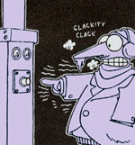
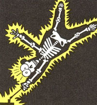
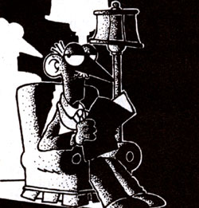

Are things in your basement not going bump in the night? When your oil furnace quits, try some diagnosis before before calling a professional.
On the whole, oil furnaces are considered to be among the most durable household appliances. Even though many manufacturers claim that their units have only a 10-year usable life, a homeowner can often expect 15 to 20 years of service from a properly maintained furnace.
However, this is not to imply that an oil burner won't develop a few ailments now and then, typically on the coldest night of the winter. In some instances, only a minor repair or adjustment will be required, but in many cases, you'll need the services of a qualified heating professional to restore the furnace to good health. Even so, if you're familiar with common problems that oil burners develop and their recommended repairs, you'll be better able to judge the quality of a repairperson's work and ward off the incompetent or unscrupulous.
In the discussion that follows, former EcoVillage Director Leroy Richter, who teaches a popular introductory course on furnace repair at a local technical institute, lists some common oil furnace problems and some ways to correctly diagnose the trouble.
[1] The furnace won't start.
First of all, Leroy advises, press the reset button, which manually starts the furnace. It's located either on the primary control at the stack (on older models) or on the burner motor (on newer appliances). Push the button once or twice; however, if the furnace doesn't come on and stay on within 60 seconds, stop pushing the button and check the fuses or circuit breaker. Don't keep pushing the reset button, which merely loads more fuel into the combustion chamber. If you do and the furnace finally does fire, you'll have a "heck of a lot of oil" in there, Richter points out.
Sometimes the motor on the burner assembly will burn out, Leroy says. If this is the case, the motor will have to be replaced. Over-oiling the motor, which is sealed, is probably the most common cause of failure. Another possibility, though a rare one, is a faulty starting switch on the motor, which is an inexpensive repair.
[2] The burner is running but there's no fire.
In this case, turn your attention first to the burner nozzle. "The opening in a nozzle is smaller than the tip of a needle," Richter points out, "and the slightest amount of water or trash can clog it up." If it's been a while since you changed the nozzle, replace this inexpensive part and see if the furnace will now operate properly.
To check for water, disconnect the oil supply line from the burner assembly and catch the fuel in a clean jar. Hold it to the light and look for the presence of water. A homeowner can minimize fuel contamination by following these suggestions: [A] Shut the furnace off while oil is being pumped into the tank and then leave it off for another hour until any trash that's present has a chance to settle in the bottom of the tank. [B] Have the oil deliveryperson check for excess water in the tank by using a simple test, a squirt of water-sensitive paste on a long stick; if water is present, drain the tank and check for cracks. [C] Keep the tank topped off with fuel, a practice that won't disturb the bottom sediment as much as infrequent fill-ups will.
Another possible cause is a shorted-out transformer. To check, Leroy advises, disconnect the wires to the burner motor and the furnace, leaving the transformer wire in place. Take a screwdriver with an insulated handle (and since you're dealing with 10,000 volts, a good wallop, be sure to hold onto the insulated handle), and touch it to one of the terminals of the transformer while slowly lowering the shaft of the screwdriver into contact with the other terminal. The current should form a two-inch arc; if the arc is small, less than 3/4 inch, the transformer is weak and needs to be replaced.
Finally, dirty or cracked electrodes and shorted-out electrode wires can keep a furnace from firing.
[3] The burner is running, there's fire in the furnace, but insufficient heat is coming through the registers.
With these symptoms, check the air filter first; if it's clogged, change it. Oddly enough, a new air filter becomes most efficient after it has collected a small coating of lint; however, an excessive buildup will impede airflow. If the air filter in your furnace needs changing more than once or twice a year, make sure that a clothes dryer, which emits lots of airborne lint, isn't too close to the furnace.
If an air filter change doesn't solve the problem, then open the inspection door to the supply-air fan and see whether the fan belt is broken and needs to be replaced. If the fan belt is in good shape, then inspect the supply-air fan itself, which could be burned out.
Finally, and this is a point of interest to homeowners with gas furnaces and heat pumps, too, Leroy emphasizes, you should check for leaky ductwork. "I recently worked on a house that had been sold twice because of excessive heating bills, and the third owner was getting ready to bail out for the same reason," Leroy recalls. "The problem was a duct that has been left hanging loose and unconnected. The furnace was just pumping heat into the crawl space." Applications of duct tape and replacement of corroded parts are necessary to correct leaky ductwork. Also, if the ducts run through an unheated basement or crawl space, Leroy advises spending the few hundred dollars that are required to insulate the ductwork of an average-sized house. "It's money well spent," he comments, "and many homeowners are capable of doing the work themselves."
Occasionally, insufficient airflow can be traced to an improperly sized return-air duct. One Mother Earth News reader wrote that, while painting, he removed an adequately large return grille in his home and discovered that a sloppy heating contractor had cut an extremely small, undersized hole behind the grille for passage of the return air.
One clue to improperly sized ductwork is a strong suction in the supply-air fan compartment. "There should be a slight suction around the fan, but not a real strong pull," Leroy says, noting that a heating professional will likely be needed to solve complicated ductwork problems.
[4] Soot and smoke are coming through the registers; there may be an oily odor in the house.
Dirty air can be caused by a number of things. "First off, open the inspection door to the combustion chamber and place your palm close to the opening. If you can hold it there without discomfort, there's probably no blockage," Leroy says. "But if it's too hot for you to stand and smoke is puffing out, there's something causing that heat to back out of the chamber."
Possibilities include a clogged chimney or flue pipe (a good spot to check is where the flue pipe connects to the chimney); insufficient draft because of a too-long flue pipe (a rare occurrence); and a clogged or cracked heat exchanger (this is a serious proposition, usually requiring the purchase of a new furnace). "A cracked heat exchanger generally occurs because of using the wrong size nozzle or improperly adjusting the burner assembly," Richter points out. "Regular furnace maintenance is important to prevent this from happening."
While you're at it, look at the gaskets around the inspection door to the combustion chamber. Over time, Leroy says, the gaskets will warp and crack, allowing smoke and heat to escape into the basement or crawl space. This smoke can then be sucked into the supply-air fan and blown into the house. A few unscrupulous furnace repair people may diagnose this problem as a cracked heat exchanger and try to sell a homeowner a new furnace rather than merely replacing the gaskets.
Furthermore, there are two internal gaskets for the inspection plates on the heat exchanger that may become warped through use and may allow smoke to escape. These will need to be checked and replaced by a heating professional.
[5] Family members wake up in the morning with sore throats, and their nasal passages feel dry. Wooden furniture may start to come apart at the joints.
"An efficient furnace will remove just about all the water from the air," Leroy points out. "Newer furnaces come with humidifiers; if you have one, use it. If you have an older unit, consider adding a humidifier."
Since moist air feels warmer than dry air, a homeowner will be able to run an oil furnace equipped with a humidifier at a lower thermostat setting; thus, a small saving in fuel consumption will result.
|
 |
 |
|
|
 |
|
|